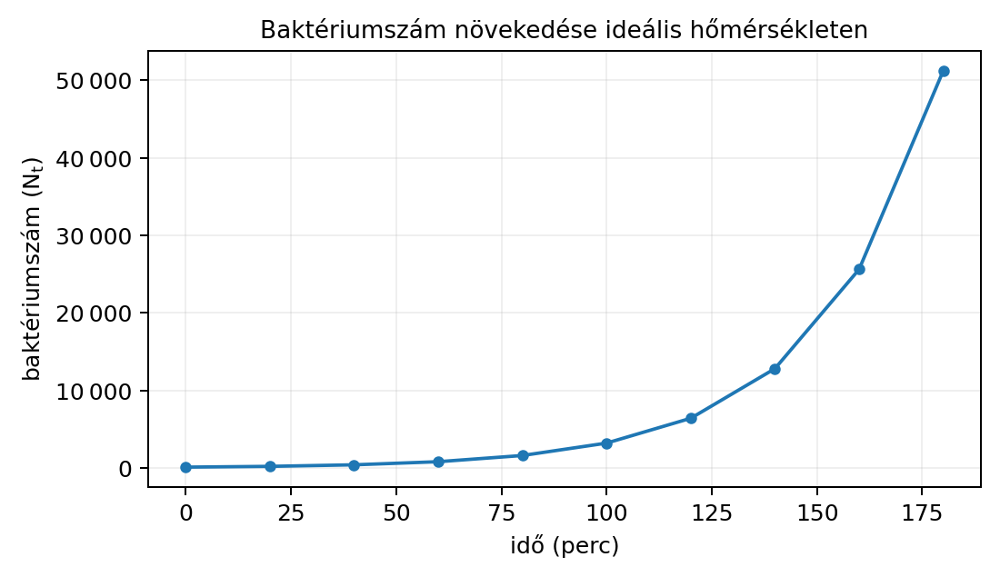

Képzeld el, hogy reggel húslevest főzöl, majd a forró lábast a tűzhelyen hagyod, mert „úgyis felforralod ebédre”. A lé felszíne langyos, a konyha meleg, az idő pedig telik. Este a vendég hasfájással jelentkezik. A látható romlás jelei nélkül is mikroorganizmusok szaporodhattak el az ételben, és egyesek mérget, toxint is termelhettek. A szakács munkája során nemcsak az étel ízére és küllemére figyel, hanem arra is, hogy az étel mikrobiológiailag biztonságos legyen. Ehhez tudnod kell, kik ezek az apró élőlények, milyen feltételek kellenek a szaporodásukhoz, és hol vannak a konyhai gyakorlatban a legveszélyesebb helyzetek.
A baktériumok gyorsan szaporodnak. Egyetlen baktérium osztódással két utódot hoz létre; ha a feltételek jók, ez a kettő ismét kettéosztódik, és így tovább. Ha egy baktérium 20 percenként osztódik, akkor 1 óra alatt 8, 3 óra alatt 512, 6 óra alatt több mint 260 000 utód keletkezhet. Ez szemlélteti, miért veszélyes az ételt órákig a langyos, veszélyes hőmérsékleti tartományban tartani. A következő ábra 100 kiinduló baktériummal mutatja ezt a növekedést: 3 óra (180 perc, 9 osztódás) alatt a 100-ból 51 200 lesz.

Az ábrán látható meredek emelkedés az exponenciális szaporodás. A konyhán ezt a folyamatot kell megakadályozni vagy lassítani.
Definíció. A mikroorganizmusok olyan apró, szabad szemmel nem látható élőlények, illetve biológiai részecskék, amelyek az élelmiszerben szaporodhatnak, anyagcseréjükkel megváltoztathatják az étel összetételét, vagy fertőzést, mérgezést okozhatnak. A konyhai élelmiszer-biztonság szempontjából öt csoportjukat kell ismerned: baktériumok, penészgombák, élesztők, vírusok és paraziták.
A baktériumok egysejtű mikroorganizmusok. Egy részük hasznos: a joghurt, a savanyú káposzta, a kovász elkészítéséhez is baktériumok kellenek. Más részük azonban kórokozó: ételfertőzést vagy ételmérgezést okozhat. A kórokozó baktériumok közül a konyhán különösen fontosak a spórás és toxintermelő fajok.
Spóra. Egyes baktériumok kedvezőtlen körülmények között vastag falú, nyugvó alakot, spórát képeznek. A spóra nem szaporodik, de ellenáll a hőnek, a szárításnak és sok fertőtlenítőszernek. Amikor a körülmények újra kedvezővé válnak – például a főtt étel lassan hűl le, és a hőmérséklete a veszélyes zónába kerül –, a spórából aktív baktériumsejt lesz, és elindulhat a szaporodás. Ezért helytelen az a gondolat, hogy „a főzés mindent megöl, utána már mindegy, hogyan hűtöm”.
Toxin. Sok kórokozó baktérium mérget, toxint termel. A toxin nem élő, tehát nem szaporodik, de károsítja a fogyasztót. Egyes toxinok hőállóak: hiába forralod fel utólag az ételt, a baktériumsejt elpusztulhat, de a már megtermelt toxin benne marad. Ezért fontos, hogy az ételt eleve ne hagyd a veszélyes zónában, ahol a baktérium toxinja termelődhet.
A penészgombák többsejtű, fonalas gombák. Telepeik a kenyéren, gyümölcsön, sajton, lekváron látható, bársonyos vagy porszerű bevonatot képeznek. A levegőben lévő spórák minden konyhában jelen vannak. A penészgombák lassabban nőnek, mint a baktériumok, de alacsonyabb vízaktivitásnál és savasabb közegben is szaporodnak. Egyes penészek mikotoxint termelnek, amely a penészes élelmiszer láthatóan nem szennyezett részeibe is átjuthat. A penészes étel ezért nem javítható egyszerűen a penészes rész levágásával; a konyhán a penészes nyersanyagot ki kell selejtezni.
Az élesztők egysejtű gombák. A sütőiparban és a sörgyártásban hasznosak: a cukrot szén-dioxiddá és alkohollá alakítják, ez keleszti a kenyeret. Ugyanakkor élelmiszerromlást is okozhatnak: gyümölcslevekben, szörpökben, lekvárokban, nyitott üvegekben erjedést, habzást, alkoholszagot idézhetnek elő. A konyhán az élesztők jelenléte inkább minőségi romlás, mint súlyos ételmérgezés, de jelezheti a nem megfelelő tárolást.
A vírusok nem sejtes élőlények, és önállóan nem szaporodnak az élelmiszerben. Ugyanakkor a fertőzött dolgozó kezéről, köhögéséből, szennyezett felületről átkerülhetnek az ételre, és a fogyasztó szervezetében megbetegedést okoznak. A vendéglátásban gyakori ilyen veszélyforrás a norovírus és a hepatitis A vírus. A védekezés lényege: alapos kézmosás, a beteg dolgozó kizárása az ételkészítésből, a nyers és kész ételek elkülönítése.
A paraziták olyan élőlények, amelyek más élőlényben vagy azon élnek. A konyhai gyakorlatban két fontos példa van.
Az alábbi ábra a csoportok jellegzetes alakját és nagyságrendjét veti össze; a spórás pálcát (3) külön mutatja, mert a spóra a konyhai hőkezelést is túlélheti. A rajzok egymáshoz nem méretarányosak: a valódi méretviszonyt a lenti logaritmikus skála mutatja, amelyen minden osztás tízszeres nagyítást jelent.
A skálán látszik, hogy a baktérium, az élesztő és a spóra nagyjából egy nagyságrendben van, a vírus százszor kisebb, a parazita lárvája pedig már szabad szemmel is észrevehető lehet. A méretek tájékoztató nagyságrendek (ellenőrizendő: mikrobiológiai szakirodalom). A HTML-kiadásban egy csoportra mutatva megjelenik a konyhai jelentősége is.
A baktériumok szaporodása szakaszokra osztható.
Definíció. A generációs idő az az idő, amely alatt a baktériumszám megduplázódik az exponenciális szakaszban kedvező körülmények között. A generációs idő fajtól és feltételektől függ: kedvező hőmérsékleten egyes kórokozóknál 10–30 perc is lehet.
A konyhán a cél az, hogy az ételben lévő baktériumok minél tovább maradjanak a lag szakaszban, vagy egyáltalán ne kerüljenek az ételbe.
A baktériumok, penészek és élesztők szaporodásához a következő tényezőkre van szükség.
| Csoport | Jellemző hőmérséklet-tartomány | Példa | Konyhai jelentőség |
|---|---|---|---|
| Pszichrofil | 0–20 °C között, optimum 10–15 °C körül | egyes romlást okozó baktériumok, penészek; a kórokozók közül a Listeria monocytogenes (hidegtűrő) | hűtőben is lassan szaporodnak – a hűtött, fogyasztásra kész étel tárolási ideje is korlátozott |
| Mezofil | 20–45 °C, optimum 35–37 °C körül | legtöbb kórokozó baktérium | a veszélyes zóna lakói |
| Termofil | 45–70 °C között, optimum 55–65 °C körül | egyes romlást okozó baktériumok | melegen tartott ételekben is előfordulhatnak |
A hőmérsékleti értékek tájékoztató jellegűek (ellenőrizendő: mikrobiológiai tankönyv, NÉBIH-útmutató).
Továbbvitt eredmény. A szaporodási feltételeket és a veszélyes hőmérsékleti zónát a következő, Hasznos és káros mikrobák, ételfertőzés és ételmérgezés alfejezetben használjuk fel, ahol a konkrét kórokozókat, azok jellemző életfeltételeit és a megelőzést tanulod meg.
Definíció. A veszélyes hőmérsékleti zóna az a hőmérséklet-tartomány, amelyben a legtöbb kórokozó baktérium a leggyorsabban szaporodik. A gyakorlatban leggyakrabban tanított tartomány: 5–60 °C (tanulási érték; ellenőrizendő: NÉBIH-útmutató / hatályos rendelet / HACCP-terv). Egyes útmutatók 4–60 °C-ot vagy 4–65 °C-ot adnak meg; az üzemben a saját HACCP-terv az irányadó.
A zóna azért veszélyes, mert a mezofil kórokozók többsége itt 20–45 °C között érzi magát a legjobban. Ha az étel maghőmérséklete ebbe a tartományba esik, a baktériumok szaporodni kezdenek, és toxinokat is termelhetnek.
Szabály. A konyhán két irányból védekezz:
Ez a hármas szabály a HACCP-rendszer alapja, és a későbbi hőkezelési, hűtési, tálalási fejezetekben mindig visszatér.
Az alábbi hőmérő-ábra egyetlen skálán foglalja össze a rész hőmérsékleti tanulási értékeit: alul a fagyasztott és a hűtött tárolás, középen a sraffozott veszélyes zóna a leggyorsabb szaporodás 20–45 °C-os sávjával, felül a melegen tartás és a hőkezelés. Később, ha egy hőmérsékletet látsz, mindig kérdezd meg: melyik sávba esik?
Figyelj arra, hogy a hűtött tárolás felső határát a könyv egyes részei és útmutatói 5 °C-nak, mások 4 °C-nak adják: az üzemben mindig a saját HACCP-terv értéke a mérvadó (ellenőrizendő: NÉBIH-útmutató / hatályos rendelet). A HTML-kiadásban a csúszkával kiválasztott hőmérséklethez a lap kiírja a sáv nevét és a teendőt, a veszélyes zónában a 2 óra alatti szaporodást is (100-ból 6400, 20 perces generációs idővel számolva).
A szaporodás számszerűsítéséhez használjuk a következő összefüggést:
ahol:
Adott: , perc, perc.
Keresett: .
Képlet: .
Behelyettesítés:
Számítás: , ezért .
Ellenőrzés: 180 perc alatt 9 generáció megy végbe. Minden generáció kétszerez, tehát a kiindulási számot 512-vel szorozzuk. A kapott 51 200 reális nagyságrendű.
Egy ételben 10 kórokozó baktérium van, generációs idejük 15 perc. Mikor éri el a baktériumszám az 1 000 000-os szintet?
Adott: , perc, cél .
Keresett: .
Képlet: .
Átrendezve: .
Behelyettesítés: .
Számítás: megkeressük, hány osztódás kell. Mivel és , ezért 17 osztódás után éri el a célértéket.
Idő: perc = 4 h 15 perc.
Ellenőrzés: 16 osztódás után , ami még kevesebb 1 milliónál; 17 osztódás után , ami már meghaladja. Tehát a célértéket körülbelül 4 óra 15 perc alatt éri el. Ez mutatja, hogy a veszélyes zónában hagyott étel néhány óra alatt nagyon nagy baktériumszámot érhet el.
A konyhán a mikrobiológiai biztonságot elsősorban nem laboratóriumi vizsgálattal, hanem a következő ellenőrzésekkel biztosítod:
A főtt ételt a tűzhelyen hagyják, mert „úgyis
felforralják”.
Ok: a szakács nem ismeri a veszélyes zónát. A lassan hűlő étel
hosszú ideig tartózkodik az 5–60 °C közötti tartományban, a baktériumok
szaporodnak, és toxinokat termelhetnek. A későbbi forralás a baktériumot
elpusztíthatja, de a hőálló toxint nem tünteti el.
Helyes gyakorlat: az ételt gyorsan hűtsd le (pl. sekély
edényben, jéggel, gyakori keveréssel), majd hűtőben tárold.
A nyers húst a konyhapulton olvasztják
fel.
Ok: a hús felszíne hamar eléri a szobahőmérsékletet, és a
veszélyes zónába kerül, miközben a belseje még fagyos. A felszínen a
baktériumok szaporodhatnak.
Helyes gyakorlat: a húst hűtőben, a biztonságos előírások
szerint olvaszd ki, vagy a HACCP-tervben engedélyezett módon hideg
folyóvízben / mikrosütőben.
A hűtő hőmérsékletét nem ellenőrzik
rendszeresen.
Ok: ha a hűtő valós belső hőmérséklete 8–10 °C, az már a
veszélyes zónába esik, és a romlandó ételekben beindulhat a
szaporodás.
Helyes gyakorlat: a hűtőt naponta ellenőrizd, a hőmérőt írd
fel, és a hibát jelezd azonnal.
A penészes lekvárt „csak lekanalazzák”.
Ok: a penész fonalai mélyebbre hatolhatnak, és mikotoxinok is
keletkezhetnek. A látható rész eltávolítása nem teszi biztonságossá az
ételt.
Helyes gyakorlat: a penészes élelmiszert selejtezd ki.
Egy étterem konyháján a szakács a főtt rizst a wokban hagyta a melegítőpulton, de a pult hőmérséklete csak 50 °C volt. A rizs íze és szaga nem változott, ezért a szakács úgy gondolta, semmi baj. Másnap több vendég hányással és hasmenéssel jelentkezett. Az ellenőrzés során kiderült, hogy a rizs hosszú órákon át a veszélyes zónában volt: a melegentartó nem érte el a 63 °C-ot, a rizs maghőmérséklete pedig lassan lecsökkent 50 °C alá. A hibát a hőmérséklet-ellenőrzés hiánya okozta: a szakács nem használt maghőmérőt, és nem írta fel a melegen tartási időt. Tanulság: a melegen tartott étel hőmérsékletét rendszeresen ellenőrizni kell, és a 63 °C alatti, 2 órát meghaladó tartást kerülni kell (a számpélda tanulási jellegű, nem konkrét hatósági eset).
1. feladat (A)
Nevezd meg a mikroorganizmusok öt fő csoportját! Mindegyikre írj egy
konyhai példát, amelyben az adott csoport hasznos vagy káros lehet.
2. feladat (A)
Számold ki: egy főtt ételben 50 baktérium van, a generációs idő 30 perc.
Mennyi baktérium lesz az ételben 3 óra elteltével?
3. feladat (B)
Írd le a baktériumok szaporodási görbéjének négy szakaszát! Melyik
szakaszban szaporodnak a leggyorsabban, és mit kell tennie a szakácsnak,
hogy az ételben minél később következzen be ez a szakasz?
4. feladat (B)
Egy étel pH-ja 5,8, vízaktivitása 0,97, hőmérséklete 25 °C. Melyik
életfeltétel kedvező a baktériumok szaporodásához, melyik nem? Milyen
beavatkozással lehetne csökkenteni a szaporodást?
5. feladat (C)
Készíts táblázatot! Az első oszlopba írd be a következő tartósítási
műveleteket: hűtés, szárítás, savanyítás, sózás, cukrozás,
vákuumcsomagolás. A második oszlopba írd be, hogy az adott művelet
melyik életfeltételt csökkenti vagy vonja meg (pl. hőmérséklet,
vízaktivitás, pH, oxigén). Ez a táblázat előkészíti a tartósítási
eljárások tanulását.
6. feladat (D)
Elemezd a következő hibát! A szakács a főtt csirkét a pulton hagyta 3
órán át, mert „úgyis beteszi a hűtőbe, ha kihűlt”. Milyen
élelmiszer-biztonsági szabályt sértett meg? Mi történhetett az ételben?
Milyen lett volna a helyes eljárás?
1. feladat (A)
- Baktériumok: hasznos: joghurt, savanyú káposzta;
káros: Salmonella a nyers húsban/tojásban.
- Penészgombák: hasznos: érlelt sajtok felületi
kultúrái (egyes fajok); káros: penészes kenyér, gyümölcs.
- Élesztők: hasznos: kenyérsütés, sörélesztő; káros:
gyümölcslé erjedése.
- Vírusok: káros: norovírus fertőzött dolgozó kezéről;
hasznos a konyhában nincs.
- Paraziták: káros: trichinella sertésben, anisakis
tengeri halban; hasznos a konyhában nincs.
2. feladat (A)
Adott:
,
perc,
perc.
Keresett:
.
Képlet:
.
Behelyettesítés:
.
Számítás:
,
ezért
.
Válasz: 3 óra múlva 3 200 baktérium lesz.
3. feladat (B)
A szaporodási görbe négy szakasza:
1. Alkalmazkodási szakasz (lag): a baktériumok nem osztódnak, de
alkalmazkodnak.
2. Exponenciális szakasz: gyors osztódás, a legveszélyesebb.
3. Álló szakasz: a szaporodás és a pusztulás egyensúlya.
4. Pusztulási szakasz: a baktériumszám csökken.
A szakácsnak az a célja, hogy az ételben lévő baktériumok minél tovább a
lag szakaszban maradjanak: gyors hűtéssel, alacsony hőmérsékleten
tárolással, kedvezőtlen pH-jú vagy alacsony vízaktivitású környezet
kialakításával.
4. feladat (B)
- pH 5,8: enyhén savas, de a legtöbb kórokozó baktérium számára még
kedvező (4,5 alatti pH gátolja őket).
- vízaktivitás 0,97: magas, kedvező a szaporodásra.
- hőmérséklet 25 °C: a veszélyes zónában van, kedvező a mezofil
baktériumoknak.
Beavatkozás: hűtsük az ételt 5 °C alá, savanyíthatjuk (pl. citromlé,
ecet), vagy csökkenthetjük a vízaktivitást sóval/cukorral. A
legegyszerűbb azonnali beavatkozás a hűtés.
5. feladat (C)
A táblázat például:
| Tartósítási művelet | Csökkentett életfeltétel |
|---|---|
| Hűtés | hőmérséklet csökkentése |
| Szárítás | vízaktivitás csökkentése |
| Savanyítás | pH csökkentése (savasság növelése) |
| Sózás | vízaktivitás csökkentése |
| Cukrozás | vízaktivitás csökkentése |
| Vákuumcsomagolás | oxigén elvonása (aerob mikrobák ellen) |
6. feladat (D)
A szakács megsértette a veszélyes hőmérsékleti zónára vonatkozó
szabályt: a főtt csirkét 3 órán át a pulton hagyta, tehát 5–60 °C
közötti hőmérsékleten állt. Eközben a baktériumok szaporodhattak, és
toxinokat termelhettek. A helyes eljárás az lett volna, hogy az ételt a
főzés végétől 2 órán belül 20 °C alá, további 4 órán belül 5 °C alá hűti
(gyorsan, sekély edényben, jeges vízfürdőben vagy sokkolóval), majd
hűtőben tárolja. Ha kihűlni hagyjuk, az a veszélyes zónában hosszú időt
jelent, ami élelmiszer-biztonsági kockázat.
A mikroorganizmusok öt fő csoportja: baktériumok, penészgombák, élesztők, vírusok, paraziták. A baktériumok szaporodását a tápanyag, a vízaktivitás, a pH, a hőmérséklet, az oxigén és az idő határozza meg. Szaporodásuk görbéje alkalmazkodási, exponenciális, álló és pusztulási szakaszból áll; a generációs idő az egy osztódáshoz szükséges idő. A legveszélyesebb a veszélyes hőmérsékleti zóna: 5–60 °C között a legtöbb kórokozó gyorsan szaporodik. Ezért a melegen tartás 63 °C felett, a hidegen tartás 5 °C alatt történjen, és a főtt ételt a főzés végétől 2 órán belül 20 °C alá, további 4 órán belül 5 °C alá kell visszahűteni, a nem hűtött étel pedig legfeljebb 2 órát állhat szobahőmérsékleten (tanulási értékek; ellenőrizendő: NÉBIH-útmutató, hatályos rendelet, HACCP-terv). A baktériumtoxin hőálló lehet, ezért a későbbi forralás nem menti meg az ételt. A szaporodási feltételeket és a veszélyes zónát a következő, az ételfertőzés és ételmérgezés alfejezetben használjuk fel.